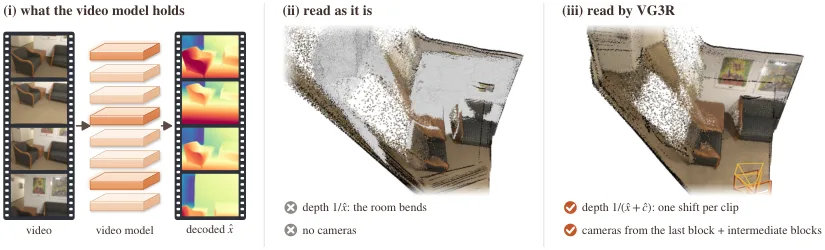
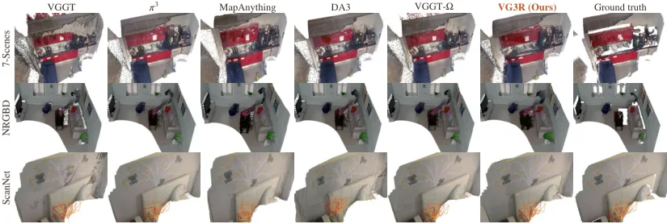
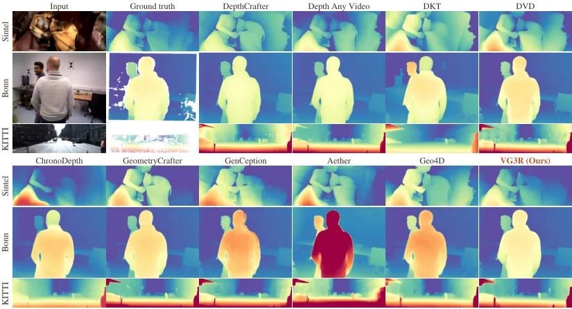
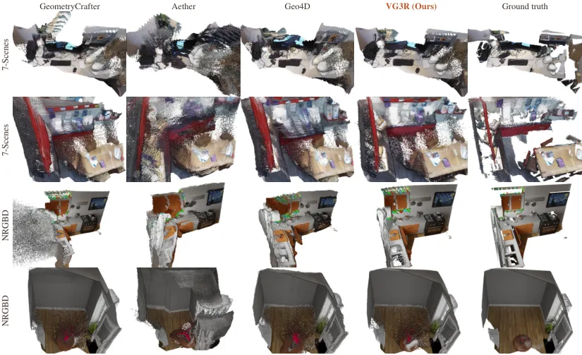
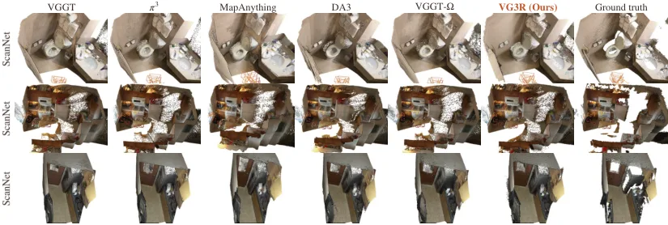

VG3R：把视频生成模型直接改造成前馈三维重建器
VG3R: Video Generation Model for Feed-Forward 3D Reconstruction
一句话：视频生成模型里已经藏着深度和相机运动，缺的只是一个「平移量」和一个「多层相机头」，补上这两样就能一步前馈出场景与轨迹。
ATE
accuracy
latency
F@5
作者、单位与技术谱系 · Research context
作者与单位
研究脉络
- DVD：Deterministic Video Depth Estimation with Generative Priors方法基座关系：提供把 Wan2.1 变成确定性深度回归器的整条流水线，VG3R 直接沿用其 VAE 解码与隐空间监督，并从其公开权重初始化 LoRA。[VG3R 原文 §3.1、§4.1 与 Table 1]
- VGGT：Visual Geometry Grounded Transformer方法上游关系：提供相机头的结构范式（帧级 token + 自注意力 + 迭代精化 R/t/fov），VG3R 把输入从图像集换成视频隐帧对。[VG3R 原文 §3.3 与 Table 1]
- Wan2.1-T2V-1.3B方法基座关系：提供视频生成骨干与冻结 VAE（4 帧压 1 隐帧、空间 1/8），决定了时序上下文与 token 预算。[VG3R 原文 §3.1 与 Table 5]
- GenCeption / Aether / Geo4D（视频生成做几何的同期路线）问题上游关系：它们分别代表「单步单任务」与「多步迭代联合生成」两条路线，VG3R 的定位正是补上两者之间「单步但联合出深度与相机」的空档。[VG3R 原文 §2.2 与 Table 2]
合作网络
- VG3R → KTH-RPL/VG3RVG3R 作者团队 → github.com/KTH-RPL/VG3R关系：官方代码/项目页[VG3R 摘要页项目链接]
- SDSU × Aalto × Concordia/Mila × KTH 跨机构署名South Dakota State University → Aalto University / Concordia University / Mila / KTH关系：共同署名（跨机构合作）[VG3R 原文作者单位脚注]
- VG3R → Wan2.1 / DVD 权重VG3R → Wan2.1-T2V-1.3B 与 DVD 公开 LoRA关系：技术依赖（预训练权重）[VG3R 原文 §3.1、§4.1]
作者单位、共同一作/共同指导符号均取自论文首页脚注；技术谱系取自正文显式引用与实验对照，未推断导师关系。代码与项目页来自摘要中的官方链接，未发现除署名与技术依赖之外的公开合作边。
方法本质拆解 · What actually changed
是不是微调？
是 LoRA 微调，但不是常规的「换任务头」：Wan2.1-T2V-1.3B 的 DiT 权重冻结，只训练秩 512 的 LoRA（从 DVD 公开权重初始化）与两个预测头，在固定时间步、空文本提示下做确定性前向，没有扩散采样过程。训练目标是深度、平移、相机、点图与两项跨帧一致性损失的加权和。
有没有额外约束？
约束分三层：ClipShift 用对数域损失把预测平移拉向 c*=δ_lo/(δ_hi−δ_lo)，并强制为正；相机损失按迭代次数指数加权，并对平移做中位深度归一化；点图损失与片段级仿射拟合、多视角真值对应一起，逼迫所有帧共享同一个深度参考。长视频推理额外用「整段预测 + 重叠滑窗」的一致性约束，窗口深度按中位对数比缩放、相机按重叠位姿的刚体变换对齐。
推理/后端到底做了什么？
推理是一次确定性前向：VAE 编码 → 30 块 DiT（固定 τ0）→ 最终块解码逆深度、ClipShift 出平移、LayerTap 出逐帧 R/t/fov → 反投影成点图。没有迭代去噪、没有测试时优化、没有独立位姿估计器，也没有全局 BA；长视频只做滑窗拼接与线性混合，点图融合留给下游。
方法本质是什么？
本质是把「重建需要什么量」与「生成模型已经给出什么量」之间的坐标变换显式化：深度缺的是一个片段级平移，相机藏在中间层特征里。它没有让模型学新的三维知识，只是把已有表征重新参数化并读出，因此速度与几何基础模型同量级，而几何上限仍受 Wan2.1 预训练数据与 LoRA 容量约束。
输入一段视频，冻结 Wan2.1 前向一次，ClipShift 补回片段级逆深度平移、LayerTap 从多层特征回归逐帧相机，直接输出点图，无去噪、无额外位姿估计。

结论与问题Conclusion & Motivation
核心结论
VG3R 的核心主张是：前馈重建不必依赖图像骨干，视频生成模型本身就是合格的三维表征，只要把它的输出「翻译」成重建需要的量。它用 ClipShift 补回被百分位归一化抹掉的逆深度平移（这个平移决定场景形状，剩下的尺度只决定整体大小），用 LayerTap 从第 10、20 与最后一块的 transformer 特征里回归每帧相机，于是深度与相机在同一次前向里同时得到，不需要迭代去噪、也不需要单独的位姿估计器。在基于视频生成模型的方法中，它在 Sintel、TUM-dynamics、ScanNet 三个轨迹基准上 ATE 全部最低（ScanNet 0.142 对次优 Aether 0.174），7-Scenes 重建精度误差从 0.047 降到 0.018。作者也诚实地把定位限定为「与几何基础模型有竞争力」，因为相机精度仍落后于 π³ 与 VGGT-Ω。
动机与问题
视频深度估计器（DVD、Depth Any Video 等）输出的是仿射不变的逆深度：每个片段被归一化到 0–1，最近的表面为 1、最远的为 0，直接取倒数会把远景推到无穷远，房间会「向后弯折」——即使给真值相机和尺度也救不回来（图 2）。要恢复形状，必须知道每个片段被减掉的那个平移 c*，它等于最远表面的逆深度除以片段内逆深度的动态范围，因此随片段而变，不能用一个全局常数代替。另一条路是用视频生成模型联合生成几何与相机（Aether、Geo4D、Sora3R、Gen3R），但都要多步迭代去噪，单帧耗时 1.1–3.0 秒。所以真正的问题是：能不能在不迭代的前提下，把生成模型里已经存在的深度与相机信息一次性读出来？
方法Method
方法总览
输入是一段视频，Wan2.1 的冻结 VAE 把首帧单独编码、之后每四帧压成一个隐帧（空间 1/8），送入 30 块 DiT，在固定时间步 τ0、空文本提示下前向一次。最终块特征经输出层与 VAE 解码器得到归一化逆深度 x̂；ClipShift 对最后一块在所有隐帧上的 token 做注意力池化，用一个 MLP 回归正的平移 ĉ，深度取 1/max(x̂+ĉ, τ)。相机侧，LayerTap 把第 10、20 与最后一块的 token 线性投影后相加，保留每个隐帧的空间 token 并与首帧隐帧配对，再用「每 RGB 帧一个可学习 query」抽出 L 个帧级 token；VGGT 式相机头用自注意力迭代 K 次，回归相对第 0 帧的旋转、平移与视场角。最后按式 (5) 把每帧反投影到第 0 帧相机系得到点图。
关键技术细节
ClipShift 的关键在于「整段只预测一个标量」：平移与场景尺度无关、且在片段内共享，所以用注意力池化跨帧聚合后回归一个正数即可，损失是 |ln((ĉ+ε)/(c*+ε))|，在对数域监督，避免大平移时梯度失衡；分母加 τ 防止深度爆炸。LayerTap 的关键在于「配对」：Wan VAE 把 4 个 RGB 帧压进一个隐帧，而相机要逐 RGB 帧给，所以它用每帧一个 query 去读「该隐帧 + 首帧隐帧」这一对，得到帧级 token，再按 VGGT 的做法迭代精化 R、t、fov；相机损失对 K 次迭代按 γ^(K−k) 加权，越晚的迭代权重越大。训练目标还包含片段级解码损失 L_dec（全片段拟合一个仿射变换，暴露帧间不一致）与多视角损失 L_mv（用真值深度和相机建立对应，取多个时间间隔以同时约束局部不一致与长程漂移），总损失为 L_lat + 0.5L_grad + L_dec + 4L_mv + L_cam + L_c + 0.5L_pts。

实验Experiments
实验设置
训练用 11 个公开数据集：ScanNet++、TartanAir V2、Matterport3D、ScanNet、PointOdyssey、Dynamic Replica、Spring、Virtual KITTI 2、DL3DV、Waymo、RealEstate10K；LoRA 秩 512，从 DVD 公开权重初始化，与预测头一起用 AdamW 训练，约 40 小时 / 128 张 GH200，测试分辨率约 288×512，评测序列均不在训练集中。视频深度在 Sintel、Bonn、KITTI 上评 AbsRel 与 δ1.25（每段一次对齐），时序一致性用 ScanNet 上的 TAE；轨迹在 Sintel、TUM-dynamics、ScanNet 上评 ATE 与 RPE；重建在 7-Scenes 与 NRGBD 上评 accuracy、completeness、normal consistency（相似变换对齐 + ICP）。对照分两组：基于视频生成模型的方法（DepthCrafter、Depth Any Video、DKT、DVD、ChronoDepth、GeometryCrafter、GenCeption、Aether、Geo4D）与几何基础模型（VGGT、π³、MapAnything、DA3、VGGT-Ω）。
实验数字与比较
轨迹上，ScanNet ATE 为 0.142，对照 GeometryCrafter 0.230、Aether 0.174、Geo4D 0.179；TUM-dynamics ATE 0.031（最好基线 0.071）；Sintel ATE 0.034（GeometryCrafter 0.077）。重建上，7-Scenes accuracy 0.018、completeness 0.017，对照 GeometryCrafter 0.047 / 0.025，相对其 accuracy 降 61.7%；NRGBD normal consistency 0.666 对 GeometryCrafter 0.660。视频深度上，Bonn AbsRel 0.037、δ1.25 0.979，是全部方法（含几何基础模型）里 Bonn 最好的；Sintel AbsRel 0.254 略高于 π³ 的 0.232。相对 VGGT：三数据集 AbsRel 降 14.2%–32.7%，TAE 降 13.4%，7-Scenes accuracy/completeness 降 14.3%/29.2%。速度上单帧 74–84 ms（GH200），ScanNet 相机分支 84 ms，对照 Aether 383 ms、Geo4D 1351 ms。
消融/失败边界
去掉 ClipShift（保留 LayerTap）时，eval20 的 F@5 从 65.0 掉到 19.6，ARKit43 从 64.4 掉到 21.8；换成「所有片段共用同一个常数平移」只能回到 44.3 / 55.2，说明平移必须逐片段自适应，这一项是形状正确性的开关。反过来去掉 LayerTap（保留 ClipShift）时，F@5 仍有 61.6 / 60.4，但 RPE-r 从 3.79° 升到 7.80°，说明深度与相机两条路相对独立、ClipShift 是几何的主力。只用最后一块特征做相机头同样把 RPE-r 推到 7.80°，证明中间块（10、20）确实携带相机运动信息。长视频用滑窗时，90 帧 ScanNet 单窗输入 RPE-r 8.87°、TAE 1.050，切窗后降到 0.73° 与 0.751；把训练数据从 3 个扩到 11 个，Sintel AbsRel 0.339→0.254、Bonn 0.092→0.037。帧式输入（无时序）F@5 只有 49.2、跨帧漂移 G5 18.0，随机初始化 DiT 为 45.9，说明时序上下文与生成预训练各自都有贡献。
局限与迁移Limitations & Transfer
局限与待核验
作者明确承认：相机估计仍不如部分几何基础模型（ScanNet ATE 0.142 高于 π³ 的 0.073、VGGT-Ω 的 0.087），重建只恢复到全局尺度、没有米制，训练需要 11 个数据集与 128 卡 40 小时。我们的待核验项：第一，ScanNet 上 ATE 与 π³ 差近一倍，而摘要只说「有竞争力」，若要做位姿前端必须补一组同分辨率、同帧数的公平对照；第二，ClipShift 假设整段共享一个平移，长视频靠滑窗 + 中位对数比拼接，滑窗边界是否引入尺度跳变，文中只给了 RPE 与 TAE，没有给拼接处的尺度连续性指标；第三，评测片段多为几十帧，室外大基线（KITTI 的 AbsRel 0.058）与真实长轨迹的表现仍待验证；第四，代码与权重承诺开源（KTH-RPL/VG3R），复现前无法独立核对 40 小时训练配方。
与你研究路线的关系
这篇对我们最直接的价值是「骨干替换」这一实验设计：在同样的前馈接口下，把图像骨干换成时序骨干，用 ClipShift 这种「诊断出来的单标量」修掉表征与任务之间的形式错配。我们的多传感器融合里也有同类错配——学习到的深度/视差先验常常只到仿射不变，进入因子图前必须估一个尺度与平移；ClipShift 的「整段一个平移 + 对数域损失」正好是一个可借用的轻量参数化，可以直接作为深度先验因子的鲁棒核外层。可迁移的第二块是 LayerTap 的「多层 + 首帧配对 + 迭代精化」相机头：我们做视觉-惯性初始化时同样需要从特征直接回归相对位姿，而中间层特征比最后层更接近几何。下一步最小实验：在我们已有的单目序列上，用同一骨干分别接「逐帧对齐」与「片段级单平移」两种深度参数化，比较进入 VIO 后尺度漂移与 ATE，验证片段级参数化能否减少前端抖动。







